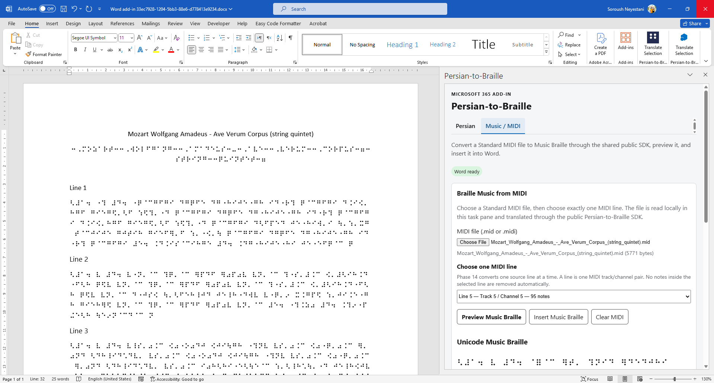

What is available in this preview
Braille Hub uses the same public SDK and Core across supported Office hosts. The Office layer handles selection, files, preview, and document insertion; Braille rules remain in the shared engines.
Forward Persian Braille translation through the shared Core and SDK.
Ordinary uncontracted six-dot English/Latin through the current Latin-span rules. This is not a claim of contracted UEB / English Grade-2 support.
Deutschland / Österreich and Schweiz with Basisschrift, Vollschrift, and Kurzschrift.
Stateful reverse translation with explicit ambiguity handling.
Standard MIDI files are processed through the semantic music path and shared Braille Music engine.
`.musicxml`, `.xml`, and compressed `.mxl` sources use the dedicated MusicXML compatibility pipeline and the same Braille Music engine.
Microsoft 365 hosts
Text translation plus the current MIDI and MusicXML file workflows. Successful previews can use Word-safe write operations.
Translate one selected plain-text cell and replace it after preview.
Translate a selected text range and replace it after preview.
Microsoft365 → SDK → Core / Music. No separate browser or Mac Braille engine.
Windows Desktop Preview
For Microsoft 365 Desktop on Windows, the preview installer prepares the same local network-share catalog and trusted Office add-in catalog used by the verified Windows sideload flow.
Download Windows Desktop Preview Installer
- Download and run the Windows Desktop Preview Installer.
- Allow the Windows UAC prompt if it appears.
- Close and reopen Word, Excel, or PowerPoint after setup.
- Select Home → Add-ins.
- Choose Get Add-ins, or Advanced when that label is shown.
- Open the SHARED FOLDER tab.
- Select Braille Hub.
- Choose Add.
- Use Translate Selection from the ribbon.
راهنمای نصب نسخه دسکتاپ ویندوز
فایل Windows Desktop Preview Installer را دانلود و اجرا کنید. نصبکننده Manifest نسخه production را از آدرس HTTPS پروژه دریافت میکند.
- اگر Word، Excel یا PowerPoint باز است، آنها را ببندید.
- در صورت نمایش UAC، اجازه ادامه نصب را بدهید.
- پس از نصب، Word، Excel یا PowerPoint را دوباره باز کنید.
- از نوار Office روی Add-ins بزنید.
- گزینه Get Add-ins یا Advanced را باز کنید.
- وارد تب SHARED FOLDER شوید.
- گزینه Braille Hub را انتخاب کنید.
- روی Add بزنید.
- از دکمه Translate Selection استفاده کنید.
Braille Music from MIDI — Word Desktop / Windows
Braille Music has been live verified in Microsoft Word Desktop on Windows.
Standard MIDI files with a .mid or .midi
extension are read locally by the add-in.
- Open Braille Hub in Microsoft Word Desktop.
- Select the Music / MIDI tab.
- Choose a Standard MIDI file.
- Choose exactly one MIDI line. A line is one Track + Channel pair.
- Select Preview Music Braille to generate Unicode Music Braille and BRF / Braille ASCII.
- Select Insert Music Braille to insert the exact successful preview at the current Word caret or selection.
No notes inside the selected line are automatically removed based on instrument, percussion, program, or channel classification.
Some complex MIDI lines may not yet be representable by the current notation bridge. Those lines fail explicitly instead of silently deleting or simplifying musical material. Choose another source line when appropriate.
Whole-song multi-line / All Lines conversion is not exposed in this preview.
MusicXML / MXL — Word Desktop / Windows
- Select the separate MusicXML tab.
- Choose `.musicxml`, `.xml`, or `.mxl`.
- Preview the Braille Music result.
- Insert the successful preview into Word.
Mac preview
The direct macOS package installs the same production Braille Hub manifest into the supported Microsoft Office sideload directories. It does not contain a separate native Braille translation engine.
Download Braille Hub Mac Preview Installer (.pkg)
- Close Microsoft Word, Excel, and PowerPoint.
- Download Braille-Hub-Mac-Preview-Installer.pkg.
- Open the package and complete the macOS Installer steps.
- Reopen Word, Excel, or PowerPoint.
- Open Home → Add-ins and select Braille Hub.
Office sideload targets
~/Library/Containers/com.microsoft.Word/Data/Documents/wef
~/Library/Containers/com.microsoft.Excel/Data/Documents/wef
~/Library/Containers/com.microsoft.Powerpoint/Data/Documents/wef
راهنمای نسخه macOS
- Word، Excel و PowerPoint را ببندید.
- فایل .pkg را دانلود کنید.
- Installer سیستم macOS را اجرا و مراحل نصب را کامل کنید.
- Office را دوباره باز کنید.
- از بخش Add-ins، افزونه Braille Hub را باز کنید.
Manifest روی Mac قبلاً بهصورت sideload آزمایش شده و کارکرد آن گزارش شده است. بستهی مستقیم `.pkg` در حال اعتبارسنجی نهایی توسط تستر است.
Individual preview — Office on the web
Office on the Web uses the same hosted Office.js task pane, public SDK, Core, and Music package boundaries as the desktop add-in.
- Download the manifest from this page.
- Open Word, Excel, or PowerPoint in Office on the web.
- Open a document or presentation.
- Select Home → Add-ins → More Settings.
- Select Upload My Add-in.
- Choose the downloaded manifest XML file and upload it.
Available through the shared Web path
Text → Braille
Text → six-dot Braille
Basisschrift / Vollschrift / Kurzschrift
MIDI and MusicXML / MXL workflows where exposed by the host UI
Download the manifest
The hosted manifest below points only to the production HTTPS build of Braille Hub.
Download the Microsoft 365 add-in manifest
https://soroushneyestani.github.io/Persian-to-Braille/install/manifest.xml
Organization deployment — Microsoft 365 admin
- Open the Microsoft 365 admin center.
- Go to Settings → Integrated apps.
- Open the Add-ins deployment flow.
- Choose the custom add-in option.
- Upload the downloaded manifest, or provide the stable manifest URL when the tenant UI offers URL-based manifest upload.
- Assign the add-in to the intended users or groups.
Windows Desktop preview
Existing live-preview screenshots from the Microsoft 365 integration.


